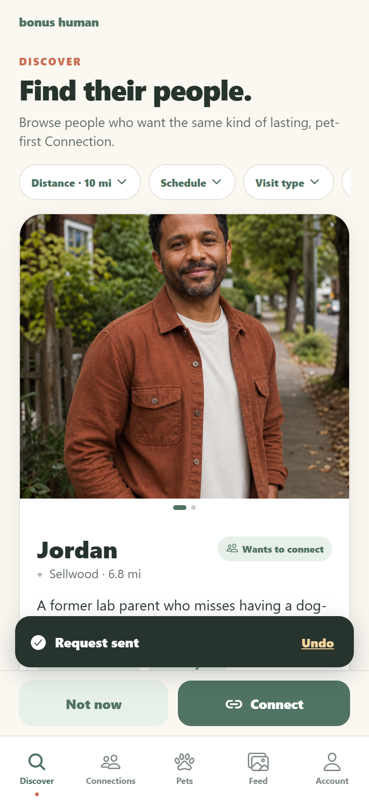
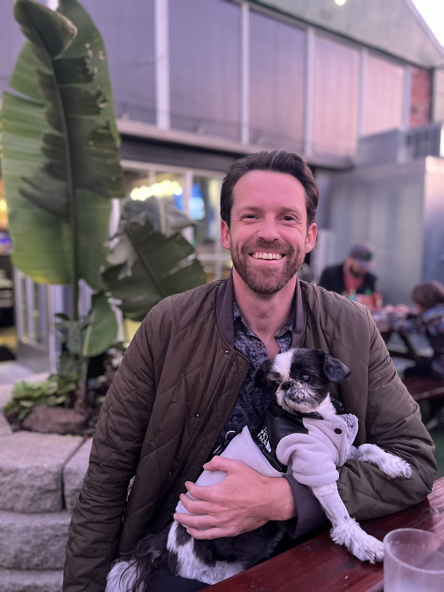
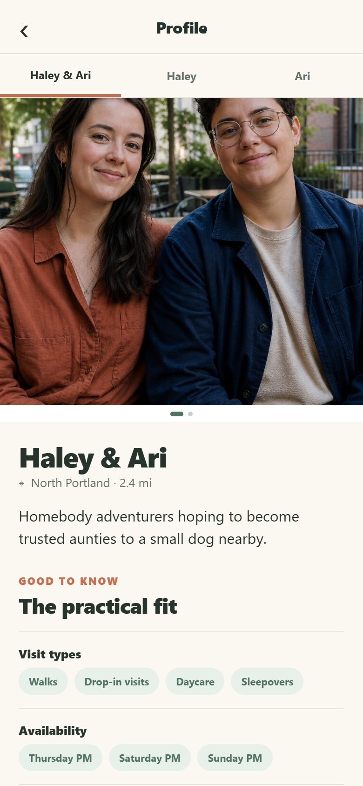
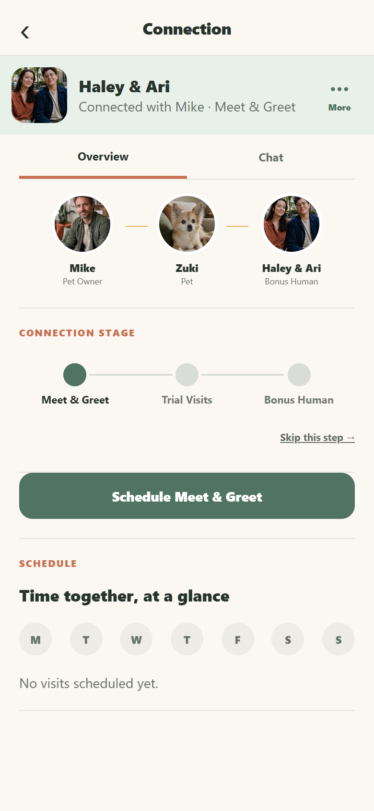
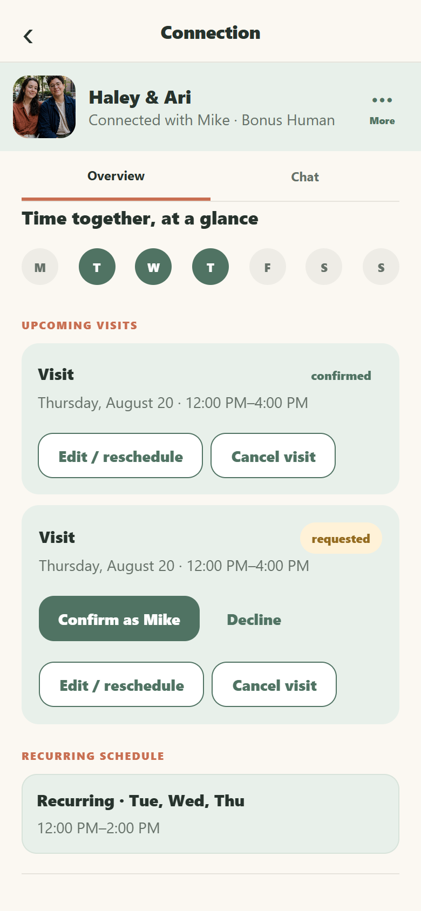
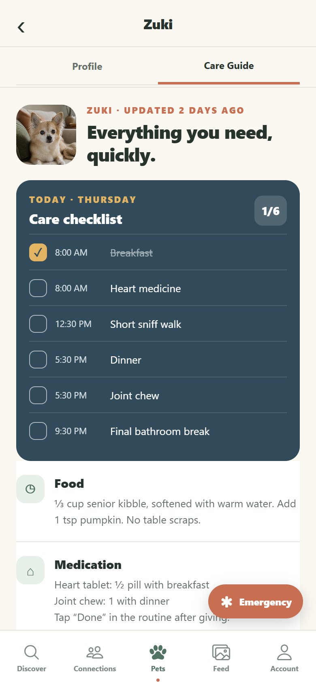
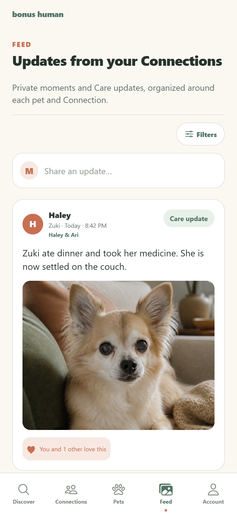
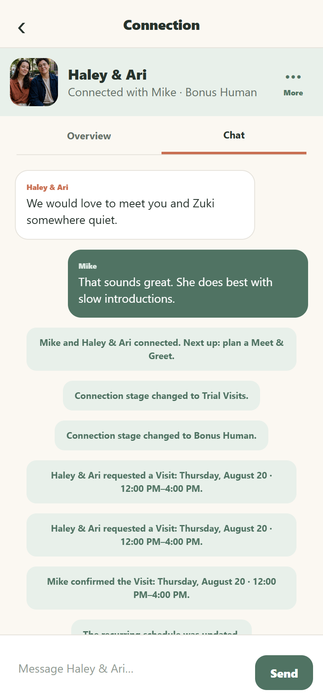

AI Prototype
Bonus Human
A new way to build pet-sharing relationships in your community

Starting point
A new approach
When Zuki turned 16, it was getting harder to find the care she needed.
Her physical and mental needs were changing: she had trouble being alone, and struggled with other dogs at our regular sitter. I wanted to mirror the special care she got from me, while still finding the freedom to live my own life.
As I talked to people in my community, I realized many of them were excited about the idea of a part-time pet. They loved animals, but couldn't make the financial, daily, or long-term commitment of ownership.
The lightbulb went off! What if we just shared?
I made posts on Facebook and Nextdoor, put up flyers, and interviewed over a dozen people. Through those conversations, I kept coming back to the same questions:
How could I make it easier to connect with people nearby?
How could we manage scheduling and other details?
How would we build trust with someone new?
How could I find Zuki a "bonus human"?

Product model
How it works.
- Users connect based on unique preferences
- Interactions are guided as the relationship grows
- Everyone involved sees details and updates over time

Discover
Compatibility before commitment.
- Look for new connections by reviewing profiles nearby
- Filter using distance, schedule, experience, and environment
- Mutual requests create a connection

Connection
Building trust over time
- Meet & Greet: get to know each other
- Trial Visit: try some time together
- Bonus Human: a new type of pet-sharing relationship

Scheduling
Plan time together.
- Get into a rhythm with recurring visits
- Or, schedule a one-off when things line up
- View the plan for the current week

Care
Critical information, easy to scan.
- Keep track of their daily routine
- Detailed instructions for food and medicine
- Easily access Veterinary/Emergency info

Stay connected between visits
- Share photos and updates in the Pet Feed
- Work out the details in the Pet Chat


Implementation
Prototyping to drive decision making
- React Native + Expo
- AI-assisted implementation with OpenAI Codex
- 42 automated regression tests
- Physical-iPhone QA
- Repeatable visual-review workflow
Changes from testing
What changed through testing
Removed a separate Relationship object that duplicated state.
Separated one-off visits from recurring availability.
Previous and Next remain in Discover, not known-profile contexts.
Deliberate boundaries
Not in this prototype.
- Production authentication or backend
- Payments
- Full calendar visualization
- Scheduling conflict detection
- Full pet-record editing